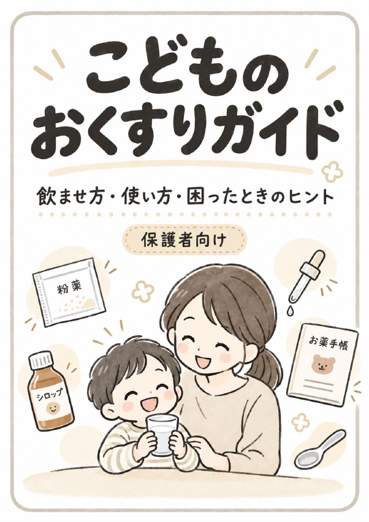

知りたいところから読む
- はじめに・薬を使う前の確認P02 →
- 成長に合わせた薬の飲ませ方P05 →
- 困りごとから探すP08 →
- 粉薬・シロップ・錠剤P09 →
- 吐いた・飲み忘れた・薬の基本P15 →
- 塗り薬・目薬・吸入薬・坐薬P21 →
- 副作用・アレルギー・間違い・保管P26 →
- よくある質問・お薬手帳・相談先P30 →
各リンクはPDFを開きます。閲覧環境によっては先頭ページが表示されるため、ページ番号を目安にお進みください。
このページで読む
文字サイズの調整や質問から探したいときは、Webの記事もご利用ください。